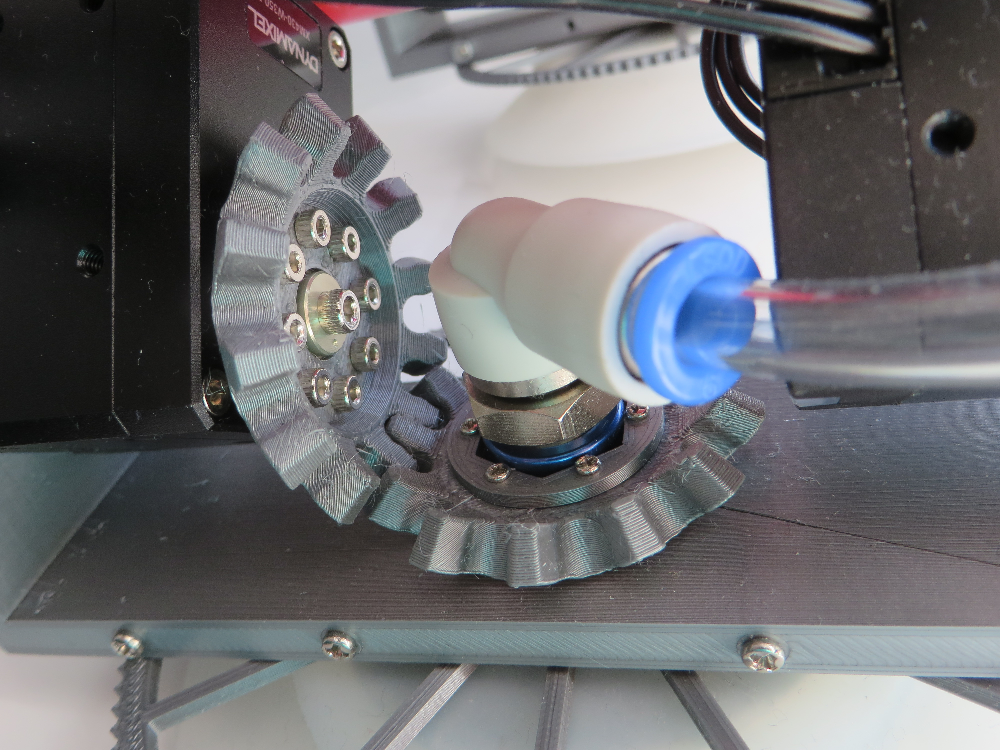

The first fully functional version
2020-03-15
Here is a video of the first fully functional version walking on the floor:
It was tested to support its own weight on plaster wall and ceiling using single leg. There are lots of areas to improve though. Pneumatic rotary joint (pictured bellow) has a lot of backlash which causes robot to turn when leg is lifted.

- Previously:
- Early prototypes
- Read next:
- Climbing on the door